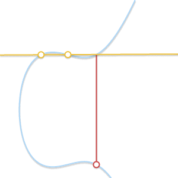
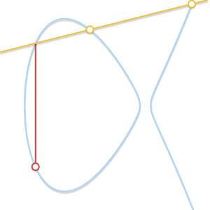

实数域上的椭圆曲线与群¶
原文： Elliptic curves over real numbers and the group law
椭圆曲线（Elliptic Curves）¶
首先，什么是椭圆曲线，简单来说，椭圆曲线就是满足以下公式的点的集合：
其中 \(4a^3 + 27b^2 \ne 0\) （排除掉奇异曲线 singular curves）。

不同形状的椭圆曲线，\(b = 1\), \(a\) 从 2 到 -3。¶
a 和 b 的值不一样，曲线在平面上的形状也不一样。显而易见并且容易证明的是：椭圆曲线都是相对于 x 轴对称的。
另外，我们定义无穷远点（point at infinity）为椭圆曲线上的一点，这个点我们用符号 \(0\) 来表示。
加上无穷远点，完善后的椭圆曲线公式如下：
群（Groups）¶
在数学中，群是一个集合 \(\mathbb{G}\) ，连同其上定义的二元运算 加 （使用符号 + 表示）。要具备成为群的资格，这个集合和运算 \((\mathbb{G}, +)\) 还必须满足叫做群公理的四个要求：
封闭性（closure）：对于所有 \(\mathbb{G}\) 中 a, b，运算 a + b 的结果也在 \(\mathbb{G}\) 中。
结合性（associativity）：对于所有 \(\mathbb{G}\) 中的 a, b 和 c，等式 (a + b) + c = a + (b + c) 成立。
单位元（identity element）：存在 \(\mathbb{G}\) 中的一个元素 \(0\)，使得对于所有 \(\mathbb{G}\) 中的元素 a，等式 \(a + 0 = 0 + a = a\) 成立。
逆元（inverse）：对于每个 \(\mathbb{G}\) 中的 a，存在 \(\mathbb{G}\) 中的一个元素 b 使得 \(a + b = 0\)。
如果再加上第 5 个条件：
交换性（commutativity）: a + b = b + a 。
那么这个群又叫做阿贝尔群（abelian group）。
整数集合 \(\mathbb{Z}\) 连同我们日常使用的整数加法构成一个群（还是一个阿贝尔群）。自然数集合 \(\mathbb{N}\) 不是群，因为不满足第 4 个要求。
在以上特性成立的基础上，我们可以继续推导出群的一些其它特性，比如：单位元是唯一的，并且逆元也是唯一的，也就是说：对于任意 a，只存在唯一的 b 使得 a + b = 0（我们可以将 b 写做 -a）。这些特性在后文中会直接或间接的派上重要用场。
在椭圆曲线上定义一个群（The group law for elliptic curves）¶
我们可以如下定义一个椭圆曲线上的群：
群里的元素为曲线上的点。
单位元 为无穷远点 \(0\)。
曲线上任意一点 \(P\) 的 逆元 是其相对于 x 轴的对称点。
加 法规定如下：曲线上任意的 3 点 \(P\)，\(Q\)，\(R\)，如果 3 点在一条直线上（aligned）并且都不是无穷远点（nonzero），那么它们的和 \(P + Q + R = 0\) 。
注意最后一条规则，我们只要求 3 个点在一条直线上，并不要求其顺序，也就是说 \(P + (Q + R) = Q + (P + R) = R + (P + Q) = \cdots = 0\)，因此定义的加法满足结合性和交换性，也就是说这是一个阿贝尔群。
那么，我们如何计算任意两点相加的和呢？
几何加法（Geometric addition）¶
上面定义的群是一个阿贝尔群，所以我们可以将 \(P + Q + R = 0\) 改写成 \(P + Q = -R\) 。从后面这个公式我们可以得出计算任意两点 \(P\) 和 \(Q\) 相加和的几何方法：过 \(P\) 和 \(Q\) 两点画一条直线，这条直线交曲线上第三点 \(R\)，取其逆元 \(-R\) 即是 \(P + Q\) 的结果。

上面的几何计算方法可以工作但还需要几点补充，尤其是下面几个问题需要解决：
如果 \(P = 0\) 或者 \(Q = 0\) 怎么办？ 此时无法画一条过两点的直线，但是前面我们已经定义了 \(0\) 为单位元，所以 \(P + 0 = P\) ，\(0 + Q = Q\) 。
如果 \(P = -Q\) 呢？ 此时过两点的直线是垂直的，和曲线没有第三个交点。但是因为 \(P\) 是 \(Q\) 的逆元，根据逆元的定义： \(P + Q = P + (-P) = 0\) 。
如果 \(P = Q\) 呢？ 过一点有无数条直线，这里问题变得有点复杂了。考虑曲线上的一点 \(Q' \ne P\) ，如果我们让 \(Q'\) 不断逼近 \(P\)，此时过 \(P\) 和 \(Q'\) 的直线就变成了曲线的切线。基于此，我们可以定义 \(P + P = -R\) ，这里 \(R\) 是曲线在 \(P\) 点的切线与曲线的另外一个交点。
如果 \(P \ne Q\)，但是没有第三个交点 \(R\) 呢？ 这个和前面一个问题的情况类似，此时过 \(P\) 和 \(Q\) 的直线是曲线的切线。
假设 \(P\) 是切点，那么 \(P + P = -Q\)，所以 \(P + Q = -P\)，同理，如果 \(Q\) 是切点，\(P + Q = -Q\) 。
以上就是几何加法的完整步骤，使用笔和尺子我们就可以完成椭圆曲线上任意两点的加法（或者可以使用这个 可视化工具 ）。
代数加法（Algebraic addition）¶
为了使用计算机来计算椭圆曲线上点的加法，我们需要将上面的几何方法转换为代数方法。将上面的规则转化为公式涉及到解三次方程，比较繁琐，所以这里我们省略过程直接给出结果。
首先，我们先去掉一些极限情况，我们知道 \(P + (-P) = 0\)，也知道 \(P + 0 = 0 + P = P\)，所以下面的公式中我们排除这两种情况，只考虑 \(P = (x_P, y_p)\) 和 \(Q = (x_Q, y_Q)\) 为非对称点、非无穷远点的情况。
因为 \(P\) 和 \(Q\) 非对称（\(x_P \ne x_Q\)），所以过两点的直线有斜率（slope），斜率为：
设直线与椭圆曲线的第三个交点为 \(R = (x_R, y_R)\)，则：
或者：
我们使用一个例子来验证以下以上公式的正确性：根据我们的 可视化工具 ，给定曲线 \(y^2 = x^3 - 7x + 10\) ，\(P = (1, 2)\) 和 \(Q = (3, 4)\) ，两点的和 \(P + Q = -R = (-3, 2)\) 。我们来看下和我们上面的公式计算的结果是否吻合：
结果一致！
即使 \(P\) 或者 \(Q\) 中的一点是切点，上面的公式依然可以得出正确的结果。例如： \(P = (-1, 4)\) 和 \(Q = (1, 2)\) 。
结果 \(P + Q = (1, -2)\) ，和 可视化工具 给出的一样。
\(P = Q\) 的情况需要特殊处理： 计算 \(x_R\) 和 \(y_R\) 的公式不变，但是斜率的公式需要修改使用以下公式（因为 \(x_P = x_Q\)）：
此时，斜率 m 是下面这个公式的一阶导数：
使用 \(P = Q = (1, 2)\) 验证一下：
结果： \(P + P = -R = (-1,-4)\) ，正确 ！
乘法（Scalar multiplication）¶
除了加法之外，我们可以再定义一个运算：乘法。
这里，\(n\) 是一个自然数。 乘法可视化计算工具 。
从乘法定义来看，计算 \(nP\) 需要进行 \(n\) 次加法运算。假如 \(n\) 为 \(k\) bit，则计算复杂度为： \(O(2^k)\) ，性能不好，还好乘法存在不少快速算法。
double and add 就是其中算法之一。这个算法的原理可以用一个例子来解释清楚。令 \(n = 151\) ，它的二进制表达形式为： \(10010111_2\) ，这个二进制形式可以进一步用一系列 2的幂(powers of two) 的和来表示：
因此 \(151 \cdot P\) 可以写成：
最后，double and add 算法的计算步骤如下：
取 \(P\) 。
计算（Double） \(2P = P + P\) 。
将 \(2P\) 和 \(P\) 相加得到 \(2^1P + 2^0P\) 的结果。
计算 \(2^2P = 2P + 2P\) 。
将 \(2^2P\) 和前面的结果相加得到 \(2^2P + 2^1P + 2^0P\) 的结果。
计算 \(2^3P = 2^2P + 2^2P\) 。
计算 \(2^4P = 2^3P + 2^3P\) 。
将 \(2^4P\) 和前面的结果相加得到 \(2^4P + 2^2P + 21^P + 2^0P\) 的结果。
……
最终我们通过 7 次 Double 和 4 次加运算就得到了 \(151 \cdot P\) 的结果。
如果上面的描述不够清晰，下面是该算法的 Python 代码实现：
def bits(n):
"""
Generates the binary digits of n, starting
from the least significant bit.
bits(151) -> 1, 1, 1, 0, 1, 0, 0, 1
"""
while n:
yield n & 1
n >>= 1
def double_and_add(n, x):
"""
Returns the result of n * x, computed using
the double and add algorithm.
"""
result = 0
addend = x
for bit in bits(n):
if bit == 1:
result += addend
addend *= 2
return result
如果 Double 和加法的复杂度是 \(O(1)\) ，那么本算法的复杂度就是 \(O(\log n)\) （或者用 n 的 bit 长度表示的话： \(O(k)\) ），性能很不错，比一开始 \(O(n)\) 的复杂度好多了。
对数（Logarithm）¶
给定 \(n\) 和 \(P\) ，我们有了一个算法可以在多项式时间内计算得到 \(Q = nP\) 。那么反过来，如果我们知道 \(Q\) 和 \(P\) 需要计算出 \(n\) 呢？这个问题被称作 对数问题 ，称其为“对数”而不是“除”主要是为了和其它加密系统一致（这些系统里乘法对应的是幂 exponentiation）。
对数问题目前没有比较高效（easy）的解决算法，当然通过 摸索 我们也能看到一些模式（pattern）。比如，曲线 \(y^2 = x^3 - 3x +1\) 和点 \(P = (0, 1)\) ，可以看到，当 \(n\) 是奇数时，\(nP\) 总是落在左边的曲线上，当 \(n\) 是偶数时，\(nP\) 落在右边的曲线上。通过不断的实验，我们也许可以发现更多的模式，这些模式可能最终可以帮我们找到一个解决对数问题的高效算法。
但是，对数问题中有一类 离散 对数问题，我们将在下文中看到，当我们缩小曲线的值域， 曲线上的乘法还是可以高效运算，但是其逆运算，也就是离散对数运算变得非常的困难（hard）。这种不对称（duality）即椭圆曲线加密的核心。